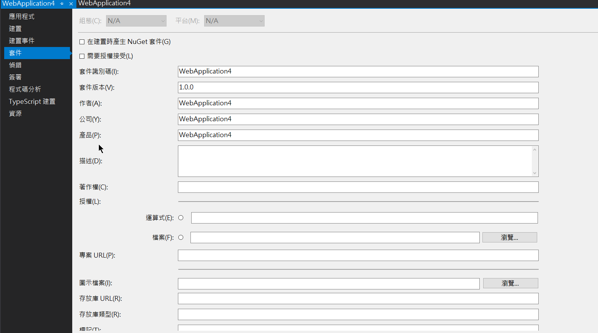
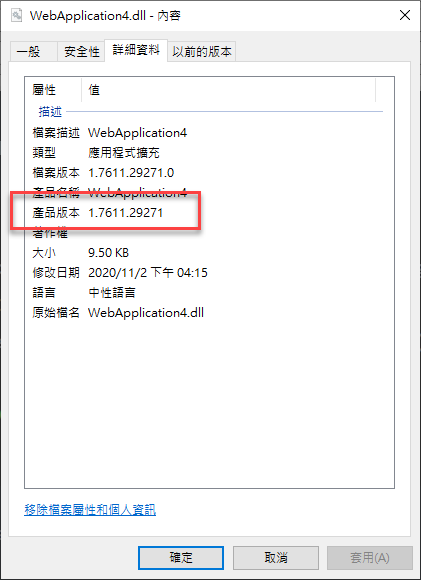

最近再弄一個版號顯示的功能，但我真的好懶得手動去改版號，有什麼自動方便的作法呢? 以下是我找到比較方便的方式
.NET Core
在以往的 .NET 專案 有一個記錄版本的檔案，叫做 Assemblyinfo.cs，裡面會記錄著專案的相關資訊包含作者、公司、產品名稱、及版本資訊等，目前可以透過 IDE 編輯專案屬性 -> 編輯套件資訊

如果要自動編版本號碼，這裡有一個透過編輯 csproj 來動態改變版本
1 | <PropertyGroup> |
<build>、<Revision>自定義變數供<Version>使用，這邊的規則可以依個人喜好修改<Version>設定產品版本

對應產生的 Assemblyinfo.cs 內容為
1 | //------------------------------------------------------------------------------ |
Angular
有時候我們也想要在前端網站給予設定版本，除了手動修改外，其實也可以透過 npm version 來完成，雖然有點奇怪，但還是可以運作啦
npm version
這功能原本是用來更新 npm package 版本使用，指令如下
1 | npm version [<newversion> | major | minor | patch | premajor | preminor | prepatch | prerelease [--preid=<prerelease-id>] | from-git] |
這指令會同步更新 package.json 的 version 欄位值，這邊就快速列出我所使用的 script
1 | "prebuild": "npm --no-git-tag-version version patch", |
prebuild這行為會發生在執行npm build之前--no-git-tag-version設定npm version不要自動 commit 且不要加上 tagnpm version patch: 只更新 patch 版號
postversion這動作會發生在npm version之後- 加入並 commit 異動檔案
當 package.json 內的 version 處理完後，就可以在 environment.ts 的地方引用 package.json 了
1 | export const environment = { |
由於這邊有使用到 node 的 required ，在 tsconfig.app.json 及 tsconfig.spec.json 的 compilerOptions.types 內要加上 node，並安裝 @types/node 的型別定義檔，剩下就跟原來使用 environment 的方式一樣了
小結
目前是我處理自動版號的方式，如果有其他更好的作法，也歡迎分享給我